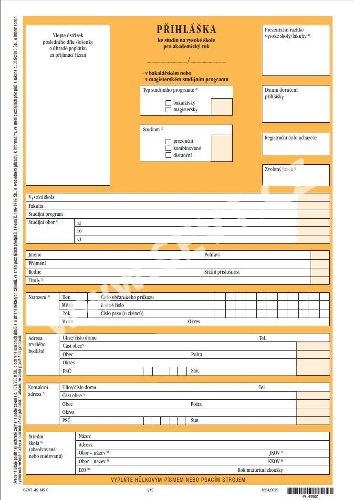

Kdo se někdy hlásil na vysokou školu, tak ví, že každá škola to má s přihláškou jinak.
Zatímco některé školy vyžadují vlastní papírovou přihlášku, jiným stačí vlastní online formulář a další by raději, abyste se jim upsali osobně.
Ale většina škol podporuje standardizovanou papírovou přihlášku společnosti SEVT (oranžový dvoulist).
Jenže vyplnění takhle důležité přihlášky je velmi obtížné, zdlouhavé a nesmí se udělat jakákoliv, byť jen minimální chyba.
Chce-li se pak člověk hlásit na více škol a chce-li se někam dostat, musí se s tím prostě poprat a rozhodně to nemá lehké.
Proto jsem vytvořil tuto aplikaci, která má za úkol tuto přihlášku snadno vyplnit online.
